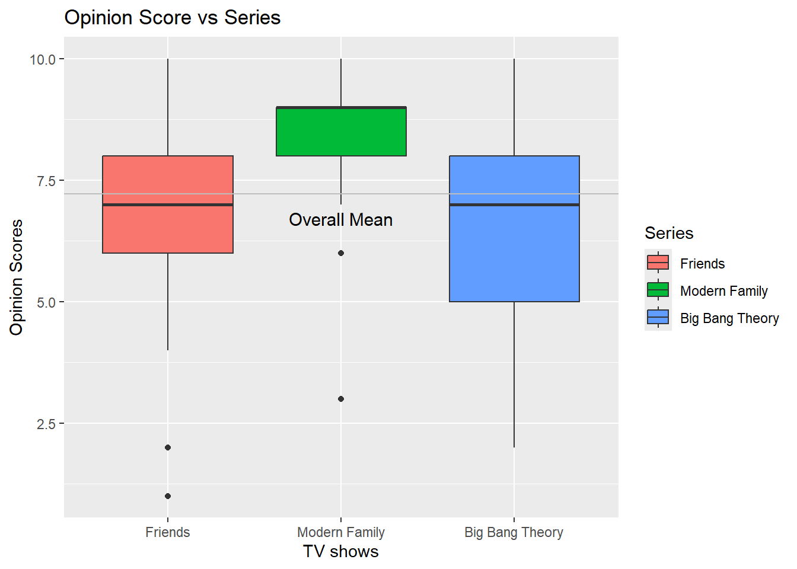
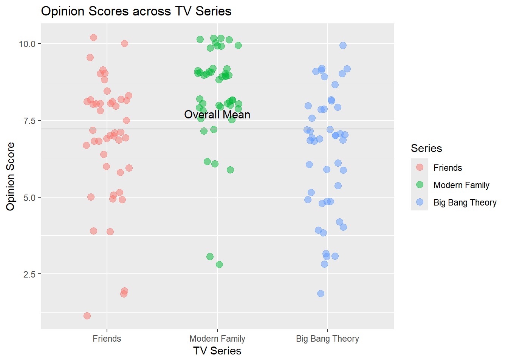
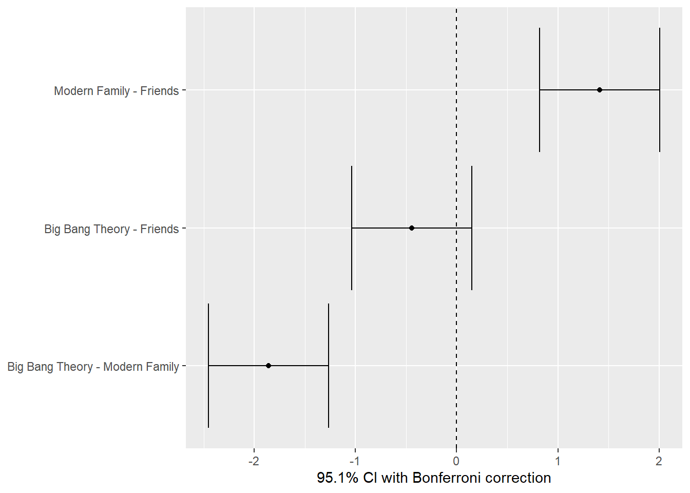
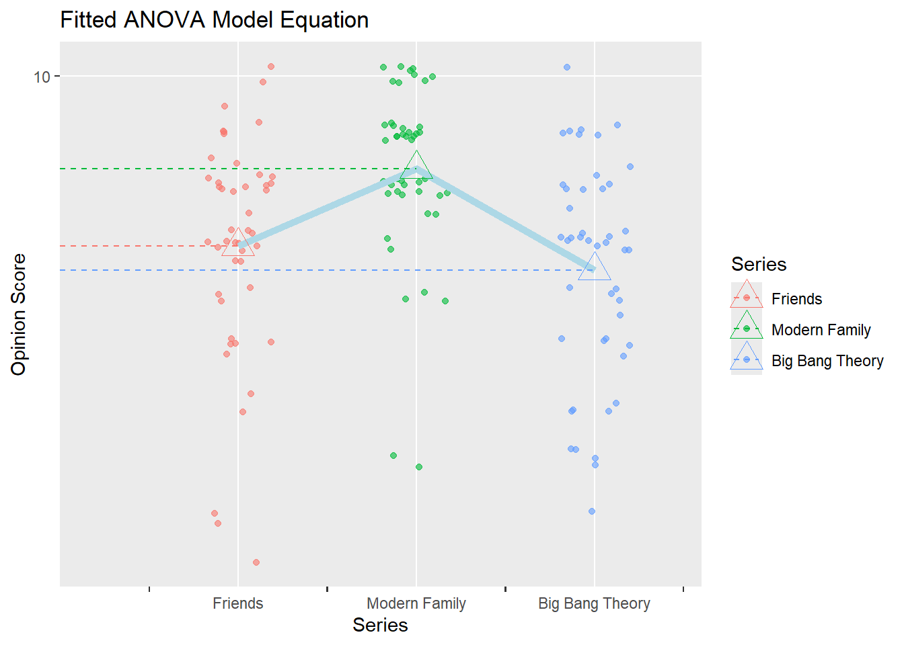
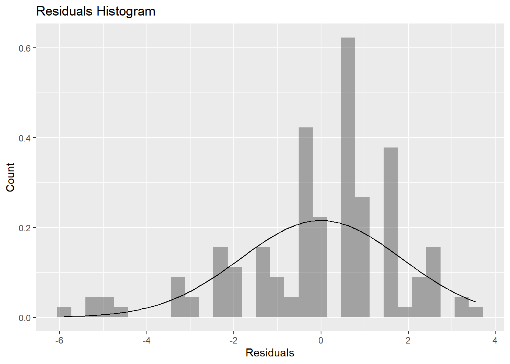
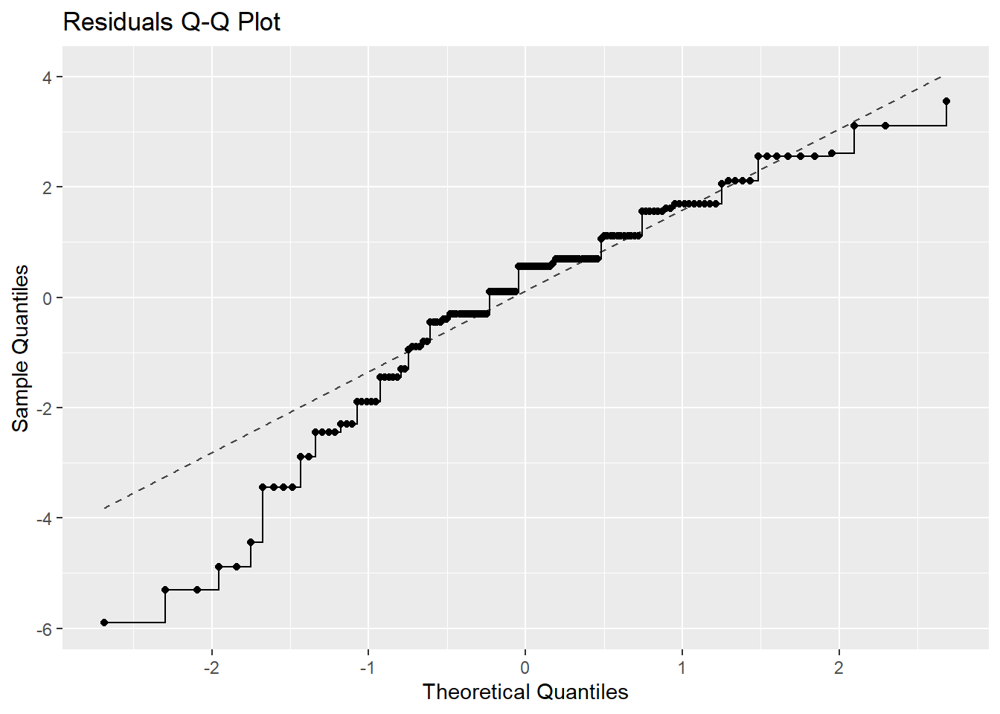
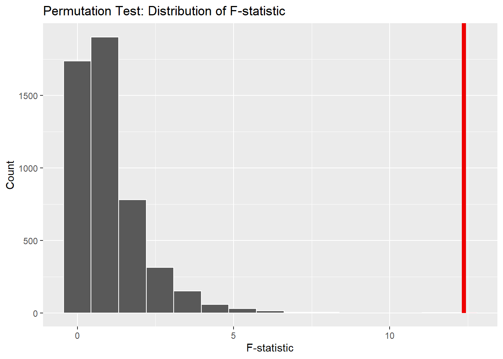

Is the Average Opinion Score for Modern Family, Friends & Big Bang Theory equal?
Author
Diya Bijoy
Published
November 4, 2025
R Packages Setup
library(tidyverse) # Tidy data processing
── Attaching core tidyverse packages ──────────────────────── tidyverse 2.0.0 ──
✔ dplyr 1.1.4 ✔ readr 2.1.5
✔ forcats 1.0.0 ✔ stringr 1.5.1
✔ ggplot2 4.0.0 ✔ tibble 3.3.0
✔ lubridate 1.9.4 ✔ tidyr 1.3.1
✔ purrr 1.1.0
── Conflicts ────────────────────────────────────────── tidyverse_conflicts() ──
✖ dplyr::filter() masks stats::filter()
✖ dplyr::lag() masks stats::lag()
ℹ Use the conflicted package (<http://conflicted.r-lib.org/>) to force all conflicts to become errors
library(ggformula) # Formula based plots
Loading required package: scales
Attaching package: 'scales'
The following object is masked from 'package:purrr':
discard
The following object is masked from 'package:readr':
col_factor
Loading required package: ggridges
New to ggformula? Try the tutorials:
learnr::run_tutorial("introduction", package = "ggformula")
learnr::run_tutorial("refining", package = "ggformula")
library(mosaic) # Data inspection and Statistical Inference
Registered S3 method overwritten by 'mosaic':
method from
fortify.SpatialPolygonsDataFrame ggplot2
The 'mosaic' package masks several functions from core packages in order to add
additional features. The original behavior of these functions should not be affected by this.
Attaching package: 'mosaic'
The following object is masked from 'package:Matrix':
mean
The following object is masked from 'package:scales':
rescale
The following objects are masked from 'package:dplyr':
count, do, tally
The following object is masked from 'package:purrr':
cross
The following object is masked from 'package:ggplot2':
stat
The following objects are masked from 'package:stats':
binom.test, cor, cor.test, cov, fivenum, IQR, median, prop.test,
quantile, sd, t.test, var
The following objects are masked from 'package:base':
max, mean, min, prod, range, sample, sum
Attaching package: 'supernova'
The following object is masked from 'package:scales':
number
library(ggstatsplot) # Statistical Plots
You can cite this package as:
Patil, I. (2021). Visualizations with statistical details: The 'ggstatsplot' approach.
Journal of Open Source Software, 6(61), 3167, doi:10.21105/joss.03167
library(ggcompare) # Improved p.value brackets on graphslibrary(patchwork) # Arranging Plotslibrary(ggprism) # Interesting Categorical Axeslibrary(paletteer) # Color Palettes
# A tibble: 138 × 4
Id Gender Series Opinion_Score
<chr> <chr> <fct> <dbl>
1 Diya Female Friends 8
2 Diya Female Modern Family 9
3 Diya Female Big Bang Theory 9
4 Ihina Female Friends 7
5 Ihina Female Modern Family 9
6 Ihina Female Big Bang Theory 6
7 Abhinav Male Friends 8
8 Abhinav Male Modern Family 10
9 Abhinav Male Big Bang Theory 7
10 Nikhita Female Friends 7
# ℹ 128 more rows
Visualising the Data
tv_long %>%gf_boxplot(Opinion_Score~Series, orientation ="x", fill =~ Series) %>%gf_labs(title ="Opinion Score vs Series",x ="TV shows",y ="Opinion Scores" ) %>%gf_hline(yintercept =~mean(Opinion_Score), color ="grey") %>%gf_annotate(geom ="text", label ="Overall Mean", x =2, y =mean(tv_long$Opinion_Score) +-0.5, size =4)

gf_theme(theme_minimal)
NULL
Between the three groups, we see a lot of variance from the overall mean.
Friends & Big Bang Theory are closer while Modern Family has a lot of variance.
gf_jitter(Opinion_Score ~ Series,color =~Series, width =0.2,data = tv_long, size =3, alpha =0.5) %>%gf_labs(title ="Opinion Scores across TV Series",x ="TV Series", y ="Opinion Score" ) %>%gf_hline(yintercept =~mean(Opinion_Score), color ="grey") %>%gf_annotate(geom ="text",label ="Overall Mean",x =2,y =mean(tv_long$Opinion_Score) +0.5,size =4 )

From the above jitter plot, we see that there is a lot of variance within each group (height of each plot is long).
ANOVA
H0: All three series have equal mean opinion scores
H1: All three series have different mean opinion scores
tvshows_anova <-aov(Opinion_Score~Series, data = tv_long)tvshows_anova
Call:
aov(formula = Opinion_Score ~ Series, data = tv_long)
Terms:
Series Residuals
Sum of Squares 86.6341 472.8098
Deg. of Freedom 2 135
Residual standard error: 1.871442
Estimated effects may be unbalanced
tvshows_supernova <- supernova::pairwise(tvshows_anova,correction ="Bonferroni", # Try "Tukey"alpha =0.05, # 95% CI calculationvar_equal =TRUE, # We'll seeplot = T )

tvshows_supernova$Series
Series
Levels: 3
Family-wise error-rate: 0.049
group_1 group_2 diff pooled_se t df lower upper p_adj
<chr> <chr> <dbl> <dbl> <dbl> <int> <dbl> <dbl> <dbl>
1 Modern Family Friends 1.413 0.276 5.121 135 0.820 2.006 .0000
2 Big Bang Theory Friends -0.446 0.276 -1.615 135 -1.039 0.148 .3259
3 Big Bang Theory Modern Fami… -1.859 0.276 -6.736 135 -2.452 -1.265 .0000
supernova::supernova(tvshows_anova)
Analysis of Variance Table (Type III SS)
Model: Opinion_Score ~ Series
SS df MS F PRE p
----- --------------- | ------- --- ------ ------ ----- -----
Model (error reduced) | 86.634 2 43.317 12.368 .1549 .0000
Error (from model) | 472.810 135 3.502
----- --------------- | ------- --- ------ ------ ----- -----
Total (empty model) | 559.444 137 4.084
supernova::equation(tvshows_anova)
Fitted equation:
Opinion_Score = 6.891304 + 1.413043*SeriesModern Family + -0.4456522*SeriesBig Bang Theory + e
Warning: The S3 guide system was deprecated in ggplot2 3.5.0.
ℹ It has been replaced by a ggproto system that can be extended.

Inference:-
The test gave an F-value of 14.24 and a p-value < 0.001 which means the result is statistically significant. This suggests that at least one show’s average opinion score is different from the others.
We reject the null hypothesis that all three shows have the same average opinion score. At least one show’s rating differs significantly from the others.
1. Check for Normality
shapiro.test(x = tv_long$Opinion_Score)
Shapiro-Wilk normality test
data: tv_long$Opinion_Score
W = 0.91645, p-value = 3.301e-07
# A tibble: 3 × 4
# Groups: Series [3]
Series statistic p.value method
<fct> <dbl> <dbl> <chr>
1 Friends 0.909 0.00161 Shapiro-Wilk normality test
2 Modern Family 0.808 0.00000294 Shapiro-Wilk normality test
3 Big Bang Theory 0.946 0.0320 Shapiro-Wilk normality test
The p value at each level is very low so we reject the Null Hypothesis that its normally distributed.
tvshows_anova$residuals %>%as_tibble() %>%gf_dhistogram(~value, data = .) %>%gf_labs(title ="Residuals Histogram",x ="Residuals", y ="Count" ) %>%gf_fitdistr()
`stat_bin()` using `bins = 30`. Pick better value `binwidth`.

##tvshows_anova$residuals %>%as_tibble() %>%gf_qq(~value, data = .) %>%gf_qqstep() %>%gf_labs(title ="Residuals Q-Q Plot",x ="Theoretical Quantiles", y ="Sample Quantiles" ) %>%gf_qqline()

shapiro.test(tvshows_anova$residuals)
Shapiro-Wilk normality test
data: tvshows_anova$residuals
W = 0.93715, p-value = 7.456e-06
null_dist_infer %>%visualize() +shade_p_value(observed_infer, direction ="greater") +labs(title ="Permutation Test: Distribution of F-statistic",x ="F-statistic",y ="Count" )

null_dist_infer %>%get_p_value(obs_stat = observed_infer, direction ="two-sided")
Warning: Please be cautious in reporting a p-value of 0. This result is an approximation
based on the number of `reps` chosen in the `generate()` step.
ℹ See `get_p_value()` (`?infer::get_p_value()`) for more information.
# A tibble: 1 × 1
p_value
<dbl>
1 0
Inference:-
The observed F-statistic was 12.37, shown by the red line on the graph. The red line lies far to the right of the null distribution which represents what we would expect if there were no real differences between shows.
The p-value = 0 which indicates none of the 4,999 random permutations produced an F value as large as the observed one.
We reject the null hypothesis which confirms that at least one show’s average opinion score is significantly different from the others.
Conclusion
The ANOVA test showed a significant difference in average opinion scores (F = 12.37, p < 0.001), indicating that not all shows were rated the same.
Because the data was not perfectly normal, a permutation test was also conducted. The observed F-statistic lay far beyond the null distribution with a p-value of 0, confirming that the differences are statistically significant and not due to random variation.
Among the three shows, Modern Family received the highest average rating (8.3), followed by Friends (6.9) and The Big Bang Theory (6.4). This shows that viewers clearly preferred Modern Family, while Friends and The Big Bang Theory received comparatively lower and similar scores.
Overall, both tests lead to the same conclusion - there is a real and significant difference in how audiences rated the three shows, with Modern Family being the most favorite.